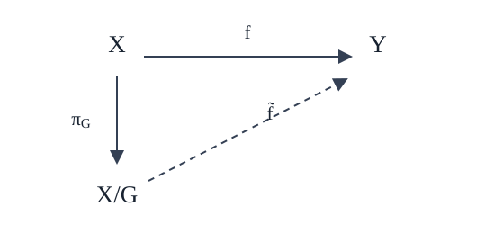

The project with Marina Meila and Chenab concerned symmetry in molecular systems: how should we compare two configurations when some differences are only changes of coordinates or labels, rather than differences relevant to the model? My contribution discussed here is a mathematical organization of that question around group actions, invariant representations, and the quotient space. The point is not to introduce quotient spaces as new mathematics, but to make their universal property do useful work in the construction of symmetry-aware comparisons.
1. The object to compare is an orbit, not always a coordinate vector
Represent a configuration of \(N\) atoms by \(x=(r_1,\ldots,r_N)\in\mathcal X\subseteq\mathbb R^{3N}\). A group \(G\) acts on \(\mathcal X\). Depending on the modelling choice, its elements may represent allowed relabellings, internal symmetries, or geometric transformations. The action generates the orbit
If these transformations are declared irrelevant, then \(x\) and \(x'\) represent the same state whenever \(x'=g\cdot x\) for some \(g\in G\). This defines an equivalence relation, and the corresponding quotient \(\mathcal X/G\) is the space of orbits.
This first step is a modelling decision, not an implementation detail. A group that is too small leaves irrelevant differences in the representation; a group that is too large identifies states that the application may need to distinguish. For example, identifying reflections is appropriate only when mirror images are meant to be equivalent. For a chiral system, that choice can erase a physically meaningful distinction.
2. Invariance as a factorization property
Suppose \(Y\) is a target space on which \(G\) acts trivially. A representation \(f:\mathcal X\to Y\) is \(G\)-invariant if
Invariance says that \(f\) is constant on every orbit. If \(Y\) carries a metric \(d_Y\), it induces a pseudometric on configurations by pulling that metric back:
Consequently, \(d_f(x,g\cdot x)=0\). It is a pseudometric rather than necessarily a metric on \(\mathcal X\), because distinct coordinate vectors can receive distance zero. There is a second subtlety: invariance guarantees that points in the same orbit are identified, but it does not guarantee the converse. If \(f\) loses additional information, it can collapse different orbits as well.
The quotient map \(\pi_G:\mathcal X\to\mathcal X/G\), defined by \(\pi_G(x)=[x]\), is the canonical invariant map. The useful categorical statement is that every invariant representation factors uniquely through it:

In formulas, there is a unique map \(\widetilde f:\mathcal X/G\to Y\) satisfying
Why is \(\widetilde f\) well-defined? If \([x]=[x']\), then \(x'=g\cdot x\) for some \(g\in G\), so invariance gives \(f(x')=f(g\cdot x)=f(x)\). Thus the value depends on the orbit, not the representative. Uniqueness follows because every point of the quotient is an orbit \([x]\).
A contribution I developed in the project was to make this factorization diagram an organizing principle for the invariant-distance problem. It separates two questions that can otherwise get mixed together: which configurations should be identified? and which representation or metric should we use on the resulting space? The universal property is standard; its role here is to connect the symmetry model to every invariant representation built from it.
3. From the quotient to a computable comparison
One route is to compare invariant representations. Another is to compare orbits directly. Given a distance \(d\) on \(\mathcal X\), a natural candidate is
When the action is by isometries, this reduces to the one-sided expression \(\inf_{g\in G}d(x,g\cdot y)\). The assumptions matter: without compatibility between the action and the distance, this expression need not have the desired metric properties. For finite groups, the infimum becomes a minimum, but the number of group elements can still make exhaustive search expensive.
For molecular configurations, a pairwise interatomic distance matrix is one way to remove dependence on global translations and rotations before addressing atom relabelling. If \(D(x)_{ij}=\lVert r_i-r_j\rVert_2\), then rigid motions preserve \(D(x)\). A permutation \(\pi\) reindexes the matrix. One can therefore study objectives of the form
This formula is a modelling template, not a claim that the optimization is cheap or that every molecular symmetry is captured by a distance matrix. Which permutations are admissible must come from the molecular model. If the model specifies subsets \(S_1,\ldots,S_k\) whose labels may be rearranged internally, a consistent global action can be described by the subgroup
This formulation is particularly useful when the subsets overlap: one permutation must satisfy all constraints at once, rather than choosing incompatible local permutations independently. In the project, I investigated extending a two-disjoint-set setup to several subsets, including overlapping subsets, and to more general groups acting on atom indices. When symmetries act independently, direct products can describe their combination; when one action reindexes another, the interaction requires additional structure, such as a semidirect product.
4. Testing invariance computationally
The group-action formulation also gives a direct diagnostic for implementations. If \(S\) is a chosen set of generators for \(G\) and \(\{x_i\}_{i=1}^M\) is a sample of configurations, one can measure the response of a candidate distance \(d\) to the tested transformations:
Because distance functions can have different scales, this quantity can be reported relative to a typical pairwise distance on the same sample, provided that scale is nonzero. I implemented a prototype benchmark around this idea, with utilities for constructing permutation and dihedral generators.
The interpretation must remain modest. A small sampled score says that the distance is insensitive to the transformations actually tested on the sampled configurations. It is not, by itself, a proof of invariance under every element of \(G\). The choice of generators, the action implementation, numerical tolerances, and the normalization all need to be checked. This makes the score a debugging and comparison tool—not a substitute for a mathematical argument.
5. What the framework clarifies
The quotient-first viewpoint keeps the logical order of the problem explicit:
- Specify the physical or representational equivalence relation.
- Encode it as a group action on the configuration space.
- Construct invariant representations, or compare orbits directly.
- Check whether the representation distinguishes the orbits it is meant to distinguish.
- Validate the implementation against the defining invariance property, while keeping computational approximations separate from exact claims.
This note isolates the mathematical framing and implementation methodology I worked on in the collaborative project with Marina Meila and Chenab. It is not a claim of sole authorship over the broader project or over the standard mathematics of group actions and quotient spaces. The central point is narrower: the commuting diagram makes the quotient's universal property explicit, and that property provides a clean interface between the choice of symmetry and the construction of invariant comparisons.